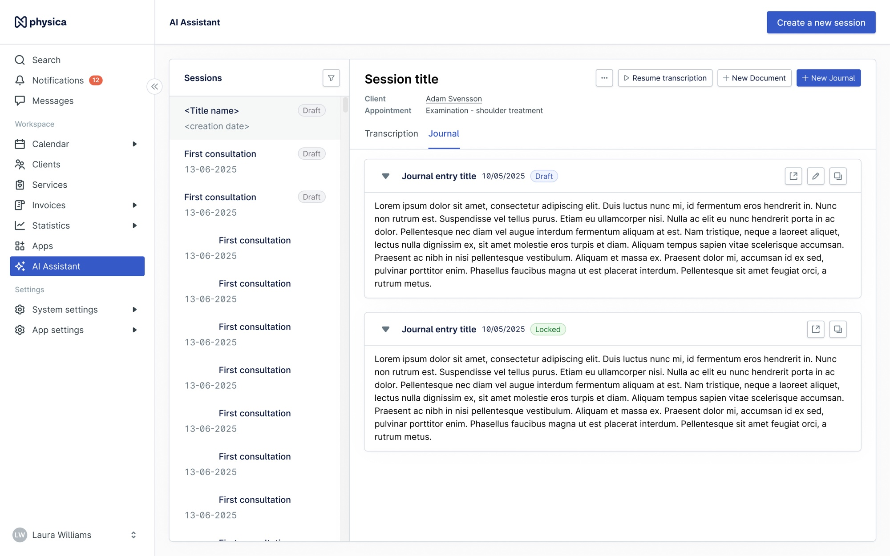
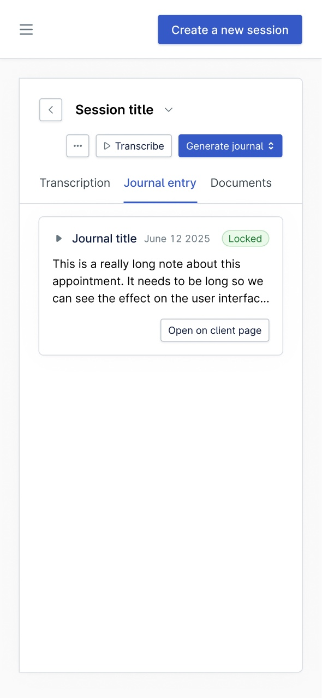
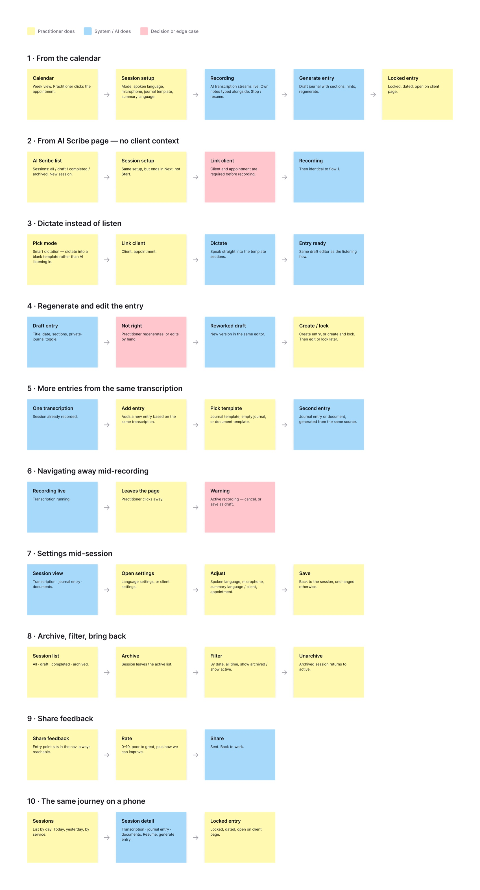

AI JOURNALING ASSISTANT
Less time writing notes. More time with patients.
- ROLE
- Lead product designer + front-end dev
- TEAM
- Me + one full-stack developer
- TIMELINE
- 6 weeks, 2025
- PLATFORM
- Web app
I helped launch the product's first AI initiative, the one meant to lead our AI growth, and led the research, design, and front-end development on it. What we built is an assistant that helps practitioners write their journal notes: it listens to the session and drafts the note inside the journal they already use.


THE PROBLEM
A psychologist finishes a heavy 50-minute session. Before the next patient arrives, they have a few minutes to turn it into a compliant journal entry. Practitioners named this their number one time sink, and it takes away from what they actually want to do, which is spend time with patients. A fun analogy: practitioners see our system as toilet paper. Something they need and have to use, but not something they enjoy. The quicker it is done, the better. So the goal was to make all the admin work as easy and quick as possible.
The AI startups were moving quickly, and standalone scribes threatened to own this workflow before we did. To stay competitive, and to catch this new segment, it was important that we started moving AI-integrated solutions into our own product.
DISCOVERY & INSIGHT
Discovery combined user pain points, competitor analysis, and internal product and workflow exploration. The pain points came mainly from user interviews and from support conversations turned into feedback tickets, all analysed in Dovetail. Journaling, epicrises, and other clinical documentation came out as practitioners' biggest time sinks.
It was also clear that many users had already adopted external AI tools to speed up this part of their workflow: Noteless, Notathuset, Tandem. Because those are standalone tools, every note meant copy-paste, manual stitching, and context switching to get the text into a patient management system that is legally compliant in their country.
We didn't need a better transcription tool. We needed no tool at all.
The insight followed from that: we already ran the complete patient management system, including appointments, billing, and compliant storage of patient records. That made us the ones who could keep this integrated and seamless instead of one more tool to stitch in.

IMAGETHE APPROACH
We wanted to move fast, so we set a hard MVP deadline with an instant follow-up once we could see user sentiment and whether we could convert them. On top of that came legacy journal workflows we couldn't break, plus GDPR and consent requirements. So we cut a lot of good features our competitors had and our users had asked for, among them speaker diarization, custom templates, confidence highlighting, and patient-history context. We shipped embedded note generation with editable SOAP summaries first.
I designed it as both an embedded workflow inside the rest of our patient management system and a standalone version of the same engine, so the assistant could be sold on its own and grow into later features without rework.
THE FLOW
01 START WHERE THE DAY STARTS
From an appointment in the calendar the practitioner is one step from the AI Assistant, or they can start a session on the AI page themselves. No separate app, no copy-pasting, no context switching.
02 TRUST THROUGH VISIBILITY
While the session runs, the UI shows exactly what is happening: recording state, transcription progress, and clear controls to pause or stop. Nothing happens silently to patient audio.
03 A DRAFT, NOT A VERDICT
When the session ends, the assistant drafts a structured SOAP note. It arrives as an editable draft the practitioner reviews, corrects, and approves. The clinician signs the note, not the model.
04 ONE SESSION, MANY ENTRIES
The transcript stays available, so the same session can produce several journal entries without re-dictating anything. It is also what let us expand after the MVP to other document types, like an epicrisis: the summary of a completed treatment course, written for whoever referred the patient.
DESIGN DECISIONS
- All inside our product
- Practitioners should never have to leave our product mid-session. Embedding the assistant where notes already live means nothing has to be copy-pasted: the note is created straight into the patient's journal.
- Editable by default
- Clinical accuracy is the practitioner's legal responsibility, so the output always arrives as a draft in an open editor. Nothing reaches the record until they have read it, corrected it, and approved it. That is what turned skeptics into users.
- A page of its own, then back into the calendar
- A session is more than a journal entry. It holds the transcript, the practitioner's own notes, appointment context, and several possible outputs, which is more than a journal editor can hold, so it got its own page. The follow-up moved that workspace into the calendar, where practitioners already spend their day, so nobody has to navigate to it.
- SOAP first
- One familiar, structured format gave the MVP a shape every practitioner recognized, kept scope shippable in six weeks, and left custom templates as a natural next step.
IMPACT
- 500+paying AI users, across brands and products
- 1,600hours of AI use a day, across markets
- 20 minsaved per session, four to five hours a week
A huge relief.
That was one psychologist on the twenty minutes the assistant gives back after every therapy session.
Just buy it. Once you start using it, you won't want to work without it again.
Another user called it life changing, saved ten minutes per consultation, and started recommending it to peers unprompted.
REFLECTION
The need was real, and shipping fast proved it. But the first version was rushed and very limited: we launched before proper validation, and early feedback called out weak AI output and too many clicks to start a session, exactly what deeper research would have caught. The lesson I carry forward is that an MVP still has to be genuinely viable, not an unfinished product. And when the first version is simple, it is on us to manage expectations and show that improvements are coming.
Since then the assistant has outgrown its MVP: a standalone experience, dictation, an AI co-pilot for journaling, broader templates, handwritten note digitization, and more markets. Custom templates and deeper contextual assistance are next, currently paused for other priorities but expected to resume.